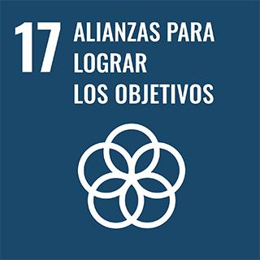

Nuestro Grupo NCA
Nosotros somos un grupo de Bachillerato de NCA del colegio Institución La Salle, cuyo proyecto está relacionado con el ODS 17: Alianzas para lograr los objetivos. Trabajamos para conectar personas y recursos en favor de nuestra comunidad.
"Crear alianzas para ayudar es fundamental para evolucionar."

